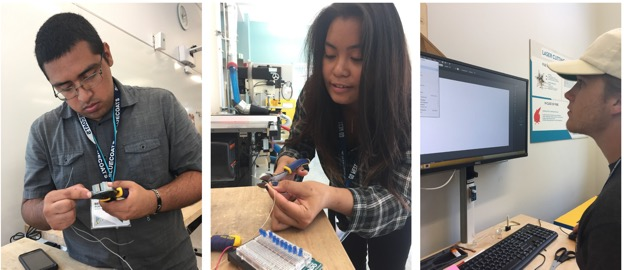

PREP & T-PREP
The Pre-Engineering Program (PREP) and Transfer Pre-Engineering Program (T-PREP) is a first year experience that provides incoming, first-year engineering students with a competitive edge through a program, cohorted coursework during the first year, advising and networking all before the fall semester begins. You’ll form close bonds that will help you succeed at Berkeley and beyond. PREP is one of the many support services offered by the Center for Access to Engineering Excellence. Through the generous support of our corporate partners, PREP is provided at no cost to participating students.
Maker Design Studio (MDS)
The Maker Design Studio (MDS) is the flagship, cornerstone experience for PREP and T-PREP students. MDS is an intensive short-course and team project-based innovation experience. MDS teaches students to rapidly ideate, design and prototype innovative engineering systems. To this end, we use the "Sprint" design process recently popularized within the start-up community. Students also receive training in Arduino, sensors, 3D modeling, 3D printing, laser-cutters, electronics, data analytics, and visualization.
